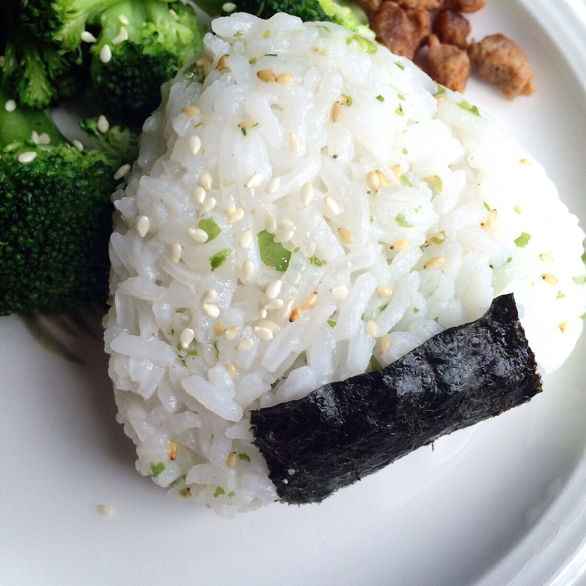
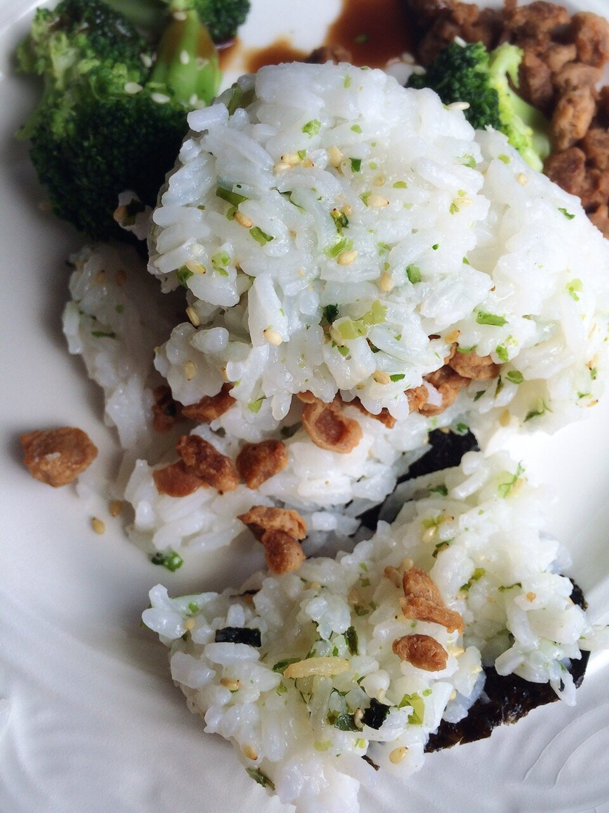

Simple Vegan Onigiri


Hiii. Have you ever had onigiri?! I made vegan onigiri!! I only ever heard of onigiri last year, but it's basically the best thing ever. A convenient rice pocket with a hidden filling surprise. Just when I thought rice couldn't get any better. Onigiri is like the Japanese version of sandwiches to Americans - a quick snack with any filling you want.
I went out with friends to dinner this weekend, and I kept debating back and forth about whether I should order onigiri. We already had a lot of food at the table though, and I figured it's best not to order more so that no food ended up wasted. It was a good call, buuuut... ever since that dinner, I've been dying for onigiri! So, in classic Kim fashion, I just decided "screw it, I can make it myself." And even better - I get to put in any filling rather than just the options on a restaurant menu.
I love this sooo much. It's really simple (basically just stuff rice with other stuff k easy), needs minimal ingredients, and doesn't take much creativity. It's cute and convenient and quick. What would you fill yours with?
Simple Vegan Onigiri
Makes: 2 onigiri
-
1/2 cup uncooked short grain white rice (or preferred grain)
-
3/4 cup water
-
dash of rice vinegar
-
1 TBSP furikake (or sesame seeds)
-
1/8 tsp salt (Optional)
-
desired filling (about 2-3 TBSP worth)
-
Wash your rice in a mesh-type strainer. You want to use your hands to wash it until the water is no longer cloudy. Add the washed rice to a medium pot with 3/4 cup water. Bring the water to a boil, then reduce to a simmer and cover with a lid. Let the rice cook for 15-20 minutes until most of the water has been absorbed. Let sit for 10-15 minutes to cool.
-
Once cooled, add a dash of rice vinegar, furikake, and salt. Lightly mix to incorporate. Separate the rice into two equal portions; each portion will make 1 onigiri. Now, take 1 portion and use your hands to make 2 triangular shapes out of it. It helps to dip your hands in water first before shaping.
-
Once you have the two triangular shapes, form a small dimple in one and fill with some of your desired filling (1-1.5 TBSP is good). I did a soy crumble mixture, but I think you could do so many things - avocado, sweet potato, purple yam, edamame, miso, endless! Firmly press the two triangles together to secure the filling inside.
-
Wrap your secure onigiri with a strip of the nori, then top with more furikake or sesame seeds.
-
Repeat process for the second onigiri, then enjoy!